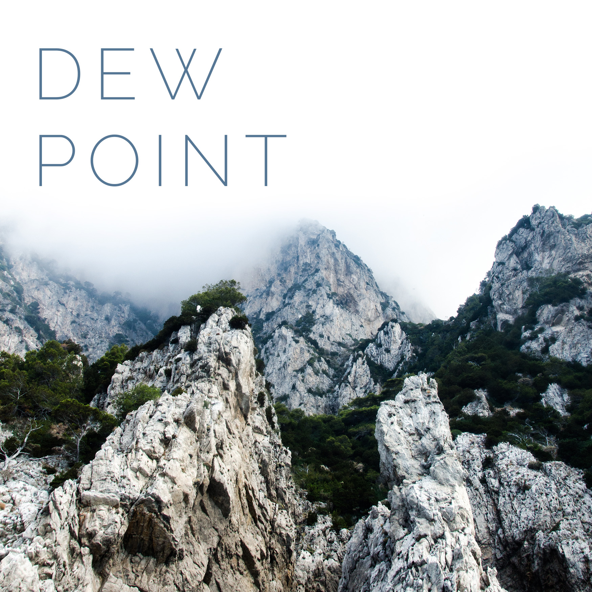

DEW POINT
April 2018
Saturday, April 7, 2018 6:00 PM 18:00 Wednesday, April 25, 2018 7:00 PM 19:00
DEW POINT | A GROUP EXHIBITION, features the work of AnaMaria Garcia, Chloe Inez, AJ Adriance, Bridget McKenna, Tiana Zurawski, s. malandra-myers, Shaina Nyman, Liz Waldie, John Marie, Dylan Pearce, Tony Joyce, Hailey Bruinsma, JAMi, Hannah Hopkins, Larisa Fox and Tony DiGiugno. A collection of image-based works by The University of Arts Photography Class of 2018,
DEW POINT runs through April 25th. In conjunction with the exhibition, there will be a film screening night on April 14th at 7pm.
